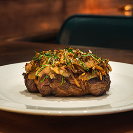

Pan Seared Steak

Description
- 2 10 oz filet
- 4 Tbsp. Maldon sea salt (any salt is fine honestly)
- 2/3 cup beef drippings
- 8 cups onions, thinly sliced
- 2 Tbsp. pin head oats
- 1 1/2 tsp. Italian parsley, chiffonade
- 3 Tbsp. freshly ground black pepper
- Heat a cast-iron skillet on the stovetop over high heat. Season filet mignon with 3 1/2 Tbsp. Maldon sea salt and cook to medium-rare, approximately 4 to 6 minutes. A digital thermometer inserted into the steak will read 130° to 135° F when it’s done. Remove from the skillet and allow it to rest for 5 to 10 minutes.
- While the beef is resting, reduce the heat to medium-high. Add the thinly sliced onions to the remaining beef fat in the skillet. Cook until lightly browned. While onions are browning, in a separate pan, toast the pinhead oats in beef fat, tallow, or neutral oil over medium-high heat until golden brown.
- As the onions and oats cook and the beef rests, remove the meat from the bone marrow shafts and dice into small pieces. Fold bone marrow, parsley, toasted oats, and black pepper into the onions to warm through.
- To plate, place filet in the center, cover with the onion-marrow-oat mixture, and garnish with a sprinkle of salt.